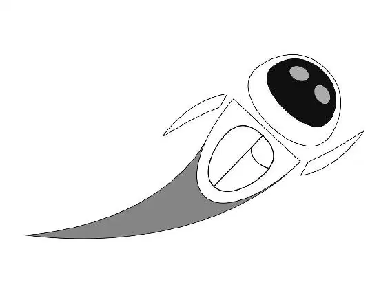

工作了漫长的一天之后，瓦力终于在日暮时分回家了。他对于他的新宝贝们——特别是那个绿色物品——感到很激动。在他刚伸出手去够拉杆打开货车时，一个圆形的红色光点出现在了他的脚上。瓦力不动了。他盯着红点看，然后慢慢地弯下腰伸手去摸它。红点在地面上快速移开。瓦力匆匆追着它跑。红点引着他进入广阔的干涸海湾。瓦力全神贯注地看着这一个红点，没有注意到许多其他红点从四面八方向他靠近。这些激光小点在他周围形成了一个圈。
瓦力听到空中传来低沉的轰鸣声。他抬头望去，看见像三个火热太阳的东西朝着他的方向扑来！轰鸣声越来越响。瓦力害怕了，他感到地面在晃动。空中落下一道道火柱，从三个方向包围了他。
瓦力开始拼命在地上挖坑。他刚跳进去，一阵烈焰就将地面烧焦了。
轰鸣声出现得很突然，但静止得同样突然。瓦力慢慢地抬起头，从他藏身的坑里探出头来看。一个庞然大物矗立在他的头上。他从坑里爬出来，头撞上了一个金属物体。
这是某种太空飞船的底部！
瓦力无处藏身，只能尽力而为。他头顶着一块小石头，缩成一个盒子的形状，希望自己不会被发现。瓦力不曾有过访客，所以他不知道会发生什么。但他的好奇心很快占了上风。他希望能够在继续隐身的同时看见发生了什么。瓦力小心翼翼地爬得离飞船近了一点以看得更清楚。
这艘太空飞船将一个太空舱放在地面上。太空舱开始打开，它的外壳分成几片向外摊开，就好像珍宝的包装被打开一样。
然后他看见她出现了。她是一个造型优美的白色蛋形探测机器人，有着明亮的蓝色眼睛。瓦力看着她姿态优雅地悬停在空中，不由得屏住了呼吸。她是他所见过的最美丽的事物。
她的名字叫作伊芙。
